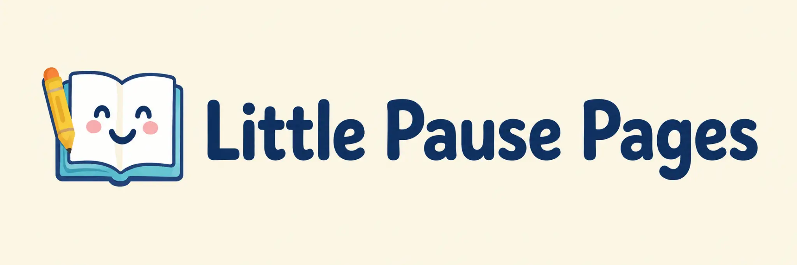
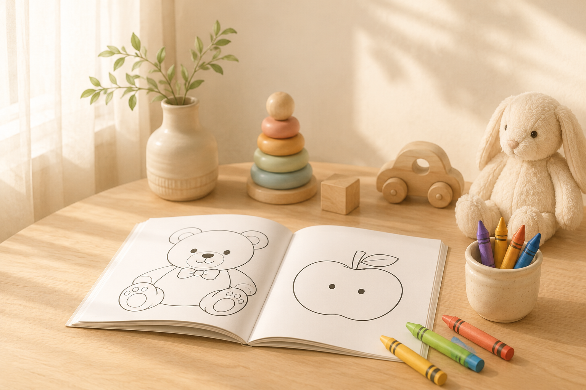
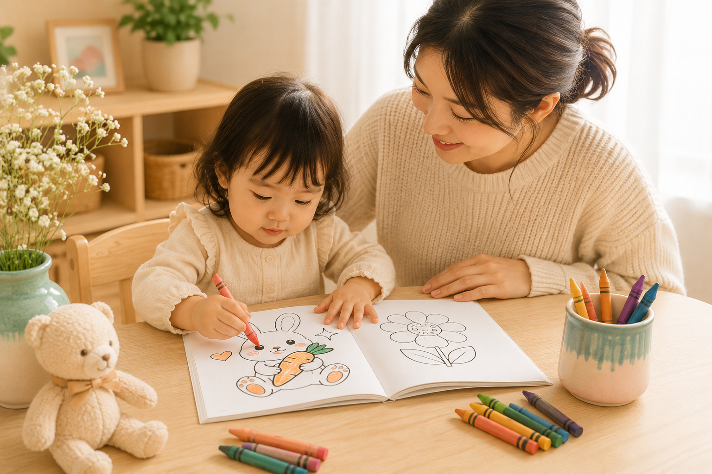

Calm moments for growing minds
A gentle brand created for the small pauses of family life, with pages that are easy for toddlers to enjoy and reassuring for parents to choose.
Little Pause Pages started with a simple thought: when a toddler needs something calm, the answer should feel easy, warm, and worth reaching for. We wanted a book that parents would feel good about handing over in the middle of a busy day.
That is why the pages stay simple, the words stay clear, and the artwork stays friendly. Toddlers get a gentle first step into coloring and word recognition. Parents get a quiet, screen-free option that feels thoughtful instead of random.
We imagine families using Little Pause Pages in the places where patience matters most: restaurants, waiting rooms, travel days, and the in-between time at home when everyone needs a breath.


We want to make those small pauses feel a little softer for families. Our Amazon paperback books and free printable previews are here to help parents offer something calm, useful, and easy to start when children need a break from the rush around them.
Each page is built to feel welcoming from the first glance, with thick outlines, open spaces, and familiar objects children can recognize. The goal is not perfection. The goal is a moment of focus, a little confidence, and a page that feels finished enough to make a child proud.
Parenting a toddler can be full of love and exhaustion at the same time. We understand that feeling, and we design for it. Little Pause Pages gives families a gentle screen-free choice that supports early learning while also creating a quieter rhythm in the room.
When a child can point to a picture, color a simple shape, and begin to recognize a word, the page becomes more than entertainment. It becomes a tiny shared win, and those small wins matter.
Clear, uncluttered designs that give toddlers room to explore without feeling overwhelmed.
Pages are planned around big shapes, thick outlines, and a gentle pacing that helps little hands succeed.
Useful for restaurants, travel, waiting rooms, quiet time, and those unpredictable moments when a family needs calm fast.
Parents trust us with their children's creative time, and we take that trust seriously in every page we make.
Start with our free sample pack: five printable pages perfect for first exploration.
Go to Free SamplesWe use your email for the sample request and Little Pause Pages updates. Unsubscribe anytime.